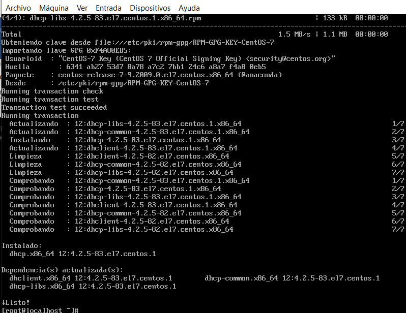
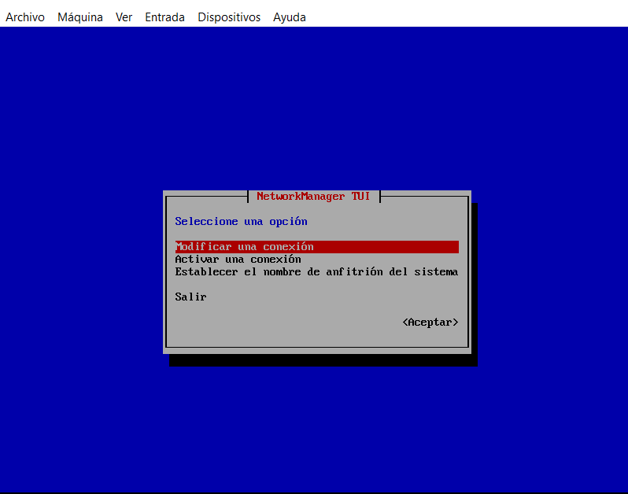
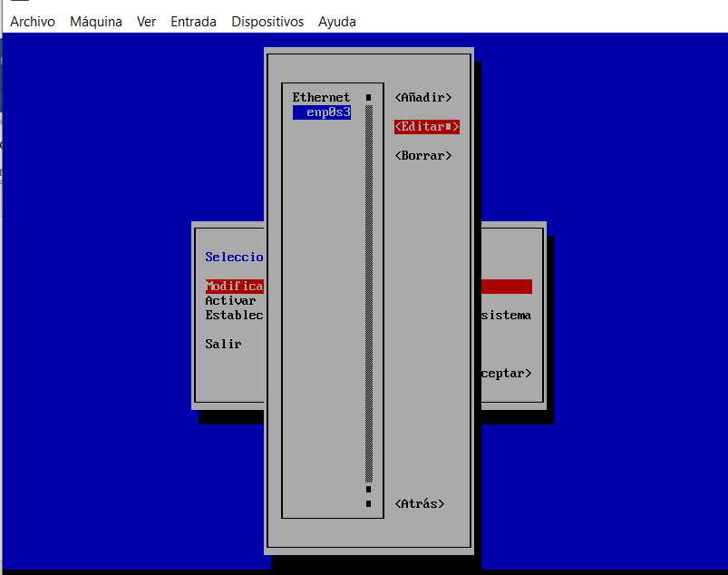
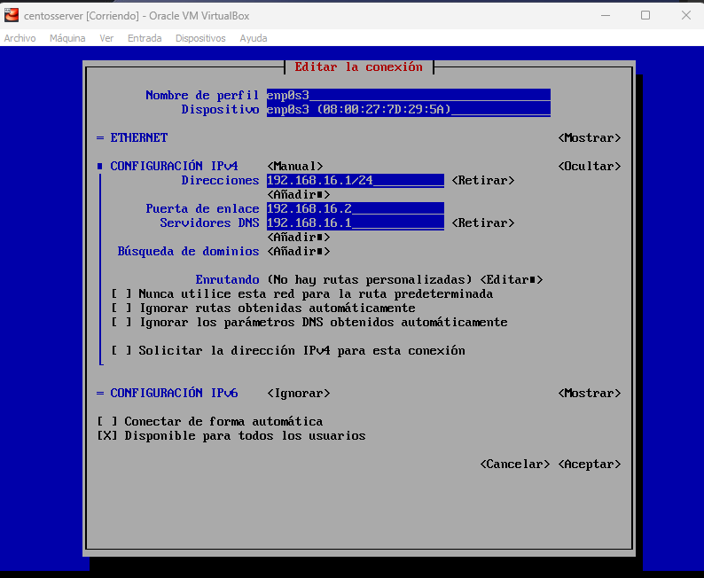
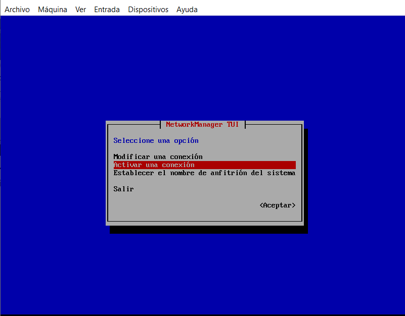
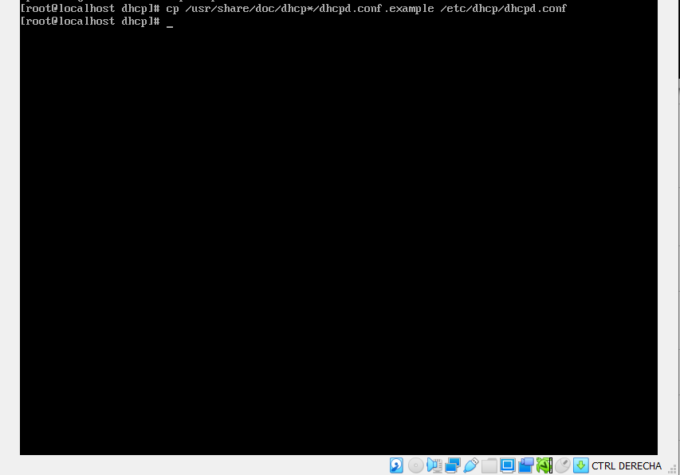
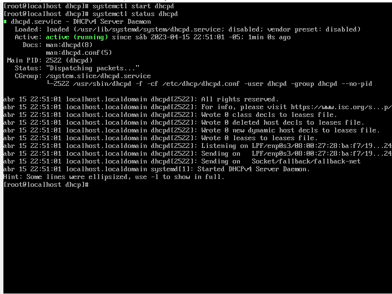

DHCP: Protocolo de Configuración Dinámica de Host- Dynamic Host Configuration Protocol
Puerto: SERVIDORES UDP 67 - CLIENTE UDP 68
El Protocolo de configuración dinámica de host (DHCP) es un protocolo cliente-servidor que proporciona automáticamente un host de protocolo de Internet (IP) con su dirección IP y otra información de configuración relacionada, como la máscara de subred y la puerta de enlace de predeterminada.
El servidor DHCP mantiene un grupo de direcciones IP y concede una dirección a cualquier cliente habilitado para DHCP cuando se inicia en la red. Dado que las direcciones IP son dinámicas (concedidas) en lugar de estáticas (asignadas permanentemente), las direcciones que ya no están en uso se devuelven automáticamente al grupo para la reasignación.
Para empezar: el adpatador de red debe estar en NAT o Adaptador puente para tener conexion a internet y poder descragar los paquetes de los servicios a instalar. Al ingresar al centos debe ingresar como super usuario:
Proceso de Instalacion:
Para empezar la insltalacion se debe emplear el comando "nmtui" para activar tarjeta de red.
Ahora se procede a instalar el paquete del servicio:
y al finalizar la instalacion se vera así
Ahora se procede a asignar una IP estatica, no si antes modificar el adaptador de Red a red inetrna
Nuevamente nmtui para generar la conexión, pero esta vez será modificada porque se elige configuración manual donde se asignara la ip del servidor, la puerta de enlace y la ip del dns que sera la misma del servidos, como se muestra en la imagen:
   Despues se hace la configuración del archivo del dhcp es decir el dhcpd.conf como muestra la imagen y se hace enter
Ahora se borra y secrea una copia de ese archivo
La copia se hace con la linea nateriormenete mencionada:
Con ls se verifica que si haya sido creado, ahora se debe ingresar y descomentar la linea que muestra la imagen:

Se guarda con ctrl + O seguido de ctrl+enter seguido de ctrl+x
Se inicia el servidor, si al dar enter no sale ningún error quiere decir que esta funcionando
Se verifica el estado y debe indicar que está funcionando:
Asi estará instalado y configurado el servicio DHCP y se puede proceder a hacer las pruebas con el cliente